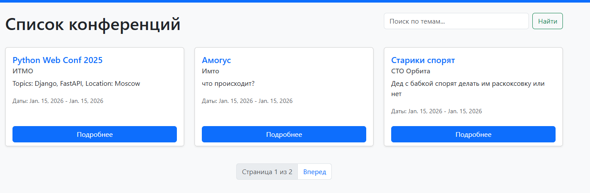
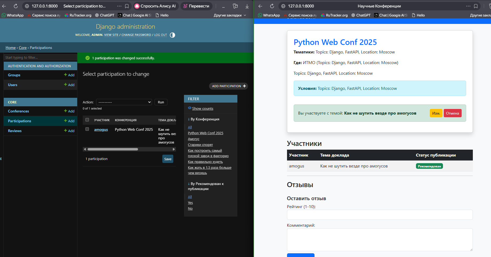

Отчет по лабораторной работе №2
Разработка веб-приложения на Django
Выполнил: Студент группы К3341 Дущенко Даниил Александрович
Цель работы
Реализовать веб-приложение для управления научными конференциями с использованием фреймворка Django 3+ и СУБД PostgreSQL. Реализовать функционал регистрации, подачи заявок, модерации, отзывов, а также поиск и пагинацию.
Ход работы
1. Проектирование Базы Данных
В соответствии с заданием были созданы следующие модели данных: * Conference (Конференция): название, темы, место, даты, описание. * Participation (Участие): связывает пользователя и конференцию, хранит тему доклада и статус рекомендации. * Review (Отзыв): хранит текст отзыва и рейтинг (1-10).
Для взаимодействия с БД PostgreSQL использовался драйвер psycopg2.
2. Реализация интерфейса (Bootstrap 5)
Для верстки использовался фреймворк Bootstrap 5. Реализовано адаптивное меню, карточки конференций и формы. * Главная страница отображает список конференций. * Реализован поиск по названию и тематикам (фильтрация QuerySet). * Реализована пагинация (разбиение списка на страницы).


3. Разделение прав доступа
Реализована логика разграничения прав доступа на стороне клиента (в шаблонах): * Администраторы видят дополнительные элементы управления (кнопки редактирования/удаления чужих записей). * Обычные пользователи видят только общедоступную информацию и свои заявки.
!
4. Управление статусом публикации
Администратор через панель Django Admin может отмечать доклады как "Рекомендованные к публикации". Этот статус отображается в общей таблице участников.

5. Система отзывов
Авторизованные пользователи могут оставлять отзывы к конференциям с выставлением рейтинга.

Вывод
В ходе лабораторной работы было разработано полнофункциональное веб-приложение на Django. * Настроено подключение к СУБД PostgreSQL. * Реализован CRUD функционал для заявок и отзывов. * Выполнены требования по реализации поиска и пагинации. * Реализовано разделение прав пользователей и администраторов. * Интерфейс стилизован с помощью Bootstrap.